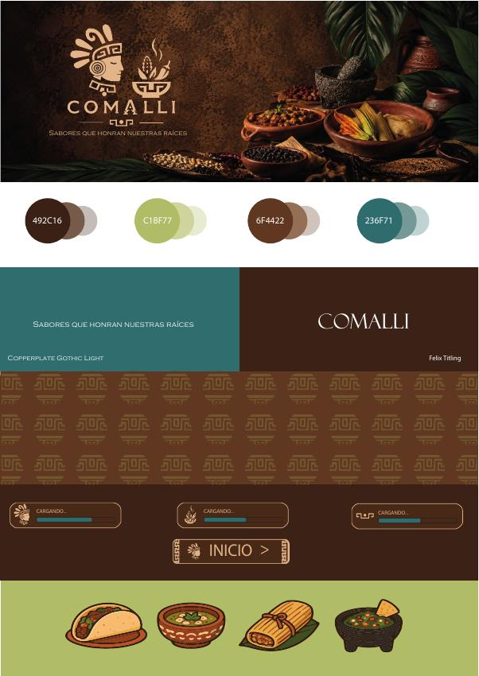

← Nuestros diseñadores
ñecas
11
Matías Illescas
/
Diseño y Multimedia
Afiche de festival · 1 página
Rockmaster Cuenca
Abrir PDF ↗

Diseño de interfaz · 3 páginas
Comalli
Abrir PDF ↗
PDF interactivo · 3 páginas
Miguel Ángel
Abrir PDF ↗
Selección de trabajos · 16 páginas
Portafolio 2026
Abrir PDF ↗

 ← Nuestros diseñadores
← Nuestros diseñadores